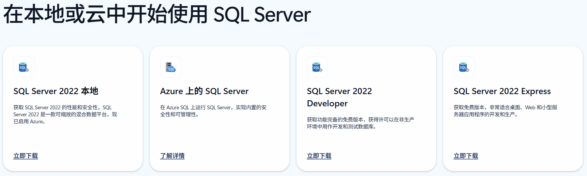

01-SQL Server安装
01-安装包下载
01-01-下载地址
SQL Server下载可以在官网下载SQL Server 下载 | Microsoft
01-02-版本区别
可以发现有多个版本

版本的区别如下SQL Server 2022 的版本和支持的功能 - SQL Server | Microsoft Learn
| 版本 | 定义 |
|---|---|
| 企业 | 作为高级产品/服务，SQL Server Enterprise Edition 提供了全面的高端数据中心功能，具有极高的性能和无限虚拟化，还具有端到端商业智能，可为任务关键工作负载和最终用户访问数据见解提供高服务级别。 |
| 标准 | SQL Server Standard 版提供了基本数据管理和商业智能数据库，使部门和小型组织能够顺利运行其应用程序并支持将常用开发工具用于内部部署和云部署，有助于以最少的 IT 资源获得高效的数据库管理。 |
| 网络 | 对于 Web 主机托管服务提供商（包括在 Azure 上的 IaaS 上选择 Web 版）和 Web VAP 而言，SQL Server Web 版本是一项总拥有成本较低的选择，可针对从小规模到大规模 Web 资产等内容提供可伸缩性、经济性和可管理性能力。 |
| 开发 人员 | 企业 SQL Server 开发人员版允许开发人员在 SQL Server 的基础上生成任何类型的应用程序。 它包括 企业版的所有功能，但许可用作开发和测试系统，而不是生产服务器。 SQL Server Developer 是构建和测试应用程序的人员的理想之选。 |
| 特快 | SQL Server Express Edition 是入门级的免费数据库，是学习和构建桌面及小型服务器数据驱动应用程序的理想选择。 它是独立软件供应商、开发人员和热衷于构建客户端应用程序的人员的最佳选择。 如果您需要使用更高级的数据库功能，则可以将 SQL Server Express 无缝升级到其他更高端的 SQL Server版本。 SQL Server Express LocalDB 是 Express 版本的一种轻型版本，该版本具备所有可编程性功能，在用户模式下运行，并且具有快速零配置安装和必备组件要求较少的特点。 |
我们下载SQL Server Express Edition版本即可
02-安装
02-01-安装SQL Server
打开下载好的安装包
选择基本即可
点击接收
选择安装位置后点击安装
安装完毕
02-02-安装SQL Server Management Studio
点击安装SSMS
进入网页安装 SQL Server Management Studio | Microsoft Learn

在里面下载，或者点击此链接下载 SSMS 21
打开安装包
安装完毕
安装完成后，在开始菜单中找到SQL Server Management Studio打开
成功登录
01-SQL Server安装
https://pattianfang.github.io/2025/08/06/01-SQL Server安装/